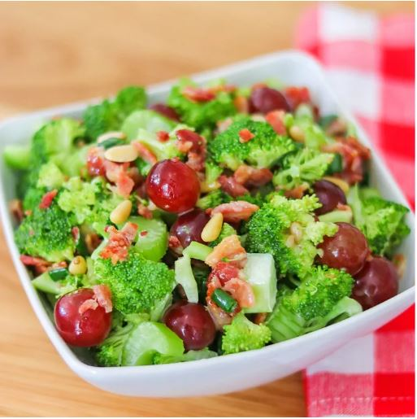

Salad Recipes

Description
Lots of vegetables in a creamy curry dressing.
Perfect side dish for a summer BBQ.
Ingredients
- 1 pound bacon
- 5 cups chopped broccoli florets
- 2 cups grapes
- 1 cup diced celery
- 2 tablespoons vinegar
- ¼ cup white sugar
- 1 cup mayonnaise
- ½ cup chopped green onions
- 1 cup diced jicama
Steps
- Place the bacon in a large, deep skillet, and cook over medium-high heat, turning occasionally, until evenly browned, about 10 minutes. Drain the bacon slices on a paper towel-lined plate, then crumble.
- Toss broccoli, grapes, celery, jicama, and green onions together in a large bowl.
- Whisk mayonnaise, sugar, vinegar, and curry powder in a bowl until well blended.
- Pour dressing over vegetables and toss with crumbled bacon and pine nuts.